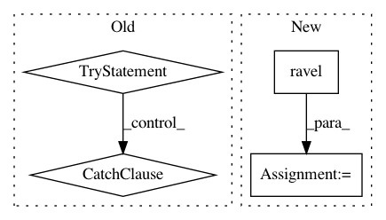

f565c6fccb4dd503f13f01146d0a6c841c0e13f6,pymc3/diagnostics.py,,effective_n,#Any#,180
Before Change
// Get all traces for var
x = np.array(mtrace.get_values(var, combine=False))
try:
n_eff[var] = calc_n_eff(x)
except ValueError:
n_eff[var] = [calc_n_eff(y.transpose()) for y in x.transpose()]
return n_eff
After Change
_n_eff = np.zeros(x.shape[:-2])
// iterate over tuples of indices of the shape of var
inds = [y.ravel().tolist() for y in np.indices(x.shape[:-2])]
for tup in zip(*inds): // iterate with zip
_n_eff[tup] = get_neff(x[tup], Vhat[tup])
// we could be using np.squeeze here, but I don"t want to squeeze
// out dummy dimensions that a user inputs
if is_scalar:
n_eff[var] = _n_eff[0]
else:
// make sure to transpose the dims back
In pattern: SUPERPATTERN
Frequency: 4
Non-data size: 4
Instances
Project Name: pymc-devs/pymc3
Commit Name: f565c6fccb4dd503f13f01146d0a6c841c0e13f6
Time: 2016-10-03
Author: becker.mr@gmail.com
File Name: pymc3/diagnostics.py
Class Name:
Method Name: effective_n
Project Name: nilearn/nilearn
Commit Name: 9b9095f877f603d91495c72f91e4fddf61f1724e
Time: 2019-07-22
Author: jerome@dockes.org
File Name: examples/02_decoding/plot_haxby_stimuli.py
Class Name:
Method Name:
Project Name: ilastik/ilastik
Commit Name: de807f39aed300bc07e1eb76d39a2c68838298ab
Time: 2016-02-08
Author: bergs@janelia.hhmi.org
File Name: lazyflow/operators/opFilterLabels.py
Class Name:
Method Name: remove_wrongly_sized_connected_components
Project Name: NeuromorphicProcessorProject/snn_toolbox
Commit Name: 66268ffdc847e64216114871bd4169ad7872966a
Time: 2019-04-11
Author: bodo.rueckauer@intel.com
File Name: snntoolbox/simulation/target_simulators/pyNN_target_sim.py
Class Name: SNN
Method Name: simulate